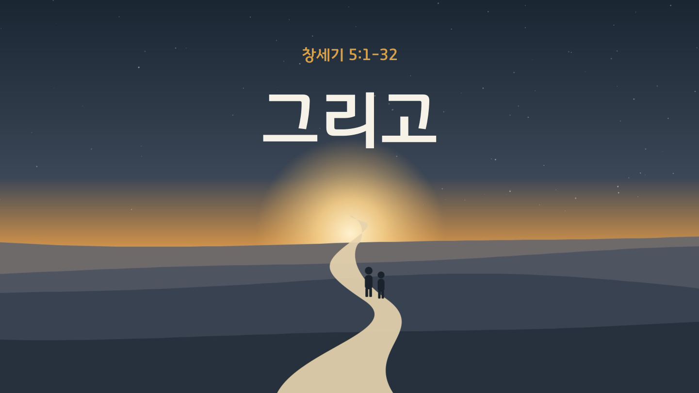

2026.10.25 주일 설교 묵상
그리고
"죽었더라"의 긴 줄 한가운데서, 먼저 손 내미신 하나님과 하루씩 함께 걷는 일주일
주일 설교 요약
본문: 창세기 5:1-32 (개역개정) · 설교자: 황성현 목사
창세기 5장에는 "그리고 죽었더라"가 여덟 번 되풀이됩니다. 969년을 산 므두셀라도 마지막 줄은 같았습니다. 그런데 그 긴 줄 한가운데 에녹에게만 다른 문장이 쓰였습니다. "에녹이 하나님과 동행하더니 하나님이 그를 데려가시므로." 동행은 하나님이 먼저 화목의 길을 여신 데서 시작되고, 믿음으로, 평범한 하루하루 속에서 걷는 것입니다. 죽음의 계보 끝에 오신 예수님이 죽으시고 다시 살아나셨기에, 그리스도 안에 있는 우리의 "그리고" 다음에는 새 문장이 쓰입니다. "그리고 하나님과 동행하더니, 하나님이 그를 영광으로 맞아 주셨더라."
창세기 5장에는 "그리고 죽었더라"가 여덟 번 되풀이됩니다. 969년을 산 므두셀라도 마지막 줄은 같았습니다. 그런데 그 긴 줄 한가운데 에녹에게만 다른 문장이 쓰였습니다. "에녹이 하나님과 동행하더니 하나님이 그를 데려가시므로." 동행은 하나님이 먼저 화목의 길을 여신 데서 시작되고, 믿음으로, 평범한 하루하루 속에서 걷는 것입니다. 죽음의 계보 끝에 오신 예수님이 죽으시고 다시 살아나셨기에, 그리스도 안에 있는 우리의 "그리고" 다음에는 새 문장이 쓰입니다. "그리고 하나님과 동행하더니, 하나님이 그를 영광으로 맞아 주셨더라."
주일 설교 슬라이드
1 / 47

좌우 화살표를 눌러 슬라이드를 넘겨보세요.
매일 이렇게 새로워지세요
- 받은 것으로 세기: 내가 가진 것을 "내가 얻었다"가 아니라 "하나님이 주셨다"로 고백합니다.
- 약함을 솔직하게: "괜찮아요"로 덮지 않고, 약한 부분을 하나님께 솔직하게 말씀드립니다.
- 말의 주어 바꾸기: "내가 했다" 대신 "하나님이 도와주셔서"라고 말해 봅니다.
- 주님의 이름으로: 직함이나 형편이 아니라 하나님의 자녀라는 이름으로 하루를 삽니다.
요일별 묵상 여정
월요일
제목
성경구절